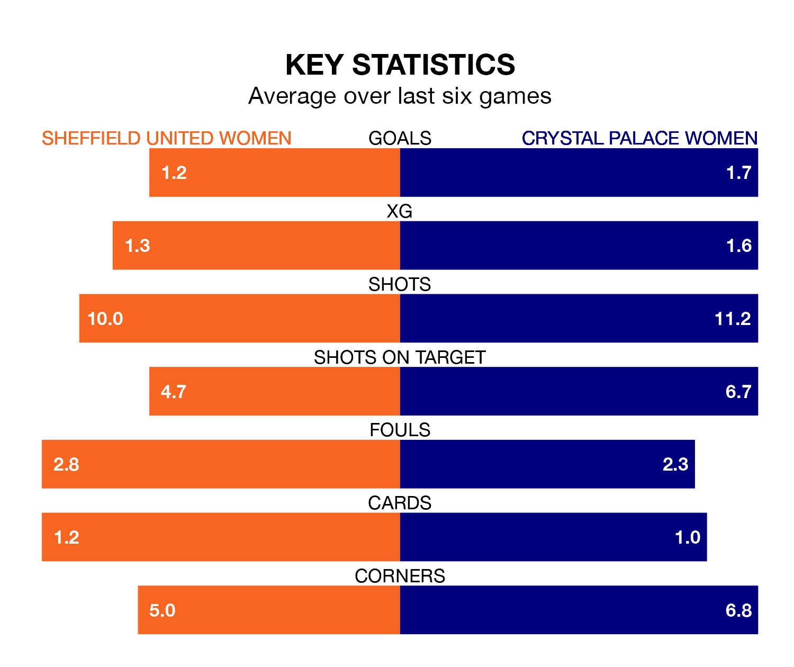

Crystal Palace Women visit Sheffield United Women at Bramall Lane on Sunday lunchtime on the back of three consecutive wins in the FA Women's Championship.
Crystal Palace have picked up 13 points from their last six games, and they face a Blades side who also won their last match, and have collected six points from the last possible 18.
With 44 goals in 16 games so far this season, Crystal Palace are the league's highest scorers with 2.8 goals per game. And they are conceding fewer than average, letting in 17 goals at a rate of 1.1 per game.
Sheffield United, meanwhile, are below average scorers, with 1.3 goals per game, compared to a league average of 1.4. They have conceded 1.5 goals per game.
In Elise Hughes, the away side have the league's most on-form striker so far this season. She has notched 14 goals in 16 appearances.
Her goal rate of one every 103 minutes is quicker than that of Isobel Goodwin, the Blades's top scorer with a goal every 124 minutes, and a total of 11 goals in 16 games.
Crystal Palace are second in the table after 16 games, of which they have won 10 and drawn three, earning 33 points.
The hosts are five places behind Crystal Palace in seventh, with six wins and two draws putting them on 20 points.
In the last 10 years, Sheffield United and Crystal Palace have played each other on 10 occasions. Sheffield United won five of them, Crystal Palace three, and they drew twice.
On average, the Blades scored 1.7 goals and Crystal Palace 0.7 in those matches.
Their last meeting was on March 10, when Crystal Palace won 1-0 at home.
Sheffield United's last match was on Wednesday, a 1-0 win against Watford Women, with Tara Bourne getting the goal for the Blades.
Crystal Palace beat Sheffield United Women 1-0 last time out, on March 10, with Molly Sharpe on the scoresheet.
Updated: 15:10 (UTC), 15/03/24